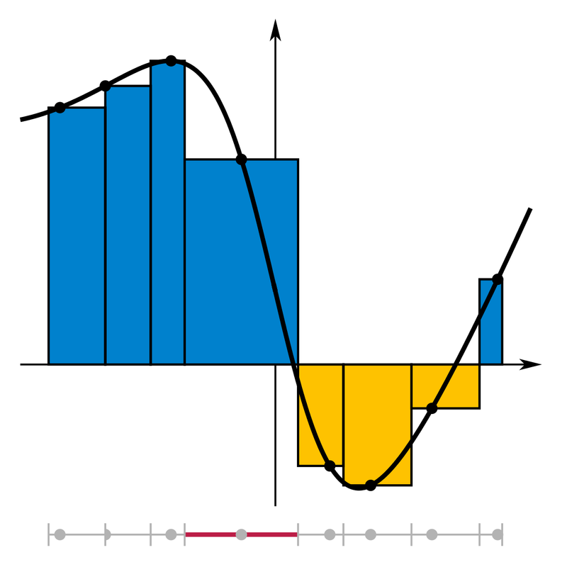

| Choisissez votre langue ! | Choose your language ! |
Définitions
Definitions
définition 1
Une
'subdivision'
d'un intervalle réel [a,b] consiste en une de points s=(x0,x1, ..., xn) vérifiant: - x0=a
- xn=b
- la suite est x0 < x1 < x2 < ... < xn
definition 1
A
'partition or subdivision'
of a real interval [a,b] consists of a of points s=(x0,x1 , ..., xn) checking: - x0=a
- xn=b
- the sequence is x0 < x1 < x2 < ... < xn
définition 2
Une
'subdivision pointée'
consiste en la donnée d'une subdivision s de [a,b] et pour chaque intervalle [xk,xk+1] un point quelconque tk ∈ [xk,xk+1]. Nous noterons une telle subdivision pointée (s,t) s étant une application de {0,1,...,n} dans [a,b] et t une application de {0, ..,n-1} dans [a,b] telle que x(k) ≤ t(k) ≤ x(k+1) ∀k∈{0, ...,n-1}.
definition 2
A
'tagged partition'
consists of the data of a partition s of [a,b] and for each subinterval [xk,xk+1] any point tk ∈ [xk,xk+1]. We will denote such a tagged partition (s,t) s being a partition (ie an application of {0,1,.. .,n} in [a,b]) and t an application of {0, ..,n-1} in [a,b] such that x(k) ≤ t(k) ≤ x(k+1) ∀k∈{0, ...,n-1} and determining which point to choose.
Cas classiques de subdivisions pointées:
- tk=xk ∀ k ∈ {0,n-1} (bornes gauches)
- tk=xk+1 ∀ k ∈ {0,n-1} (bornes droites)
- tk=(xk+xk+1)/2 ∀ k ∈ {0,n-1} (milieux)
Pas d'une subdivision
Classical examples of tagged partitions:
- tk=xk ∀ k ∈ {0,n-1} (left bounds)
- tk=xk+1 ∀ k ∈ {0,n-1} (right bounds)
- tk=(xk+xk+1)/2 ∀ k ∈ {0,n-1} (middle points)
Step of a partition
définition 3
Le
'pas'
d'une subdivision est la plus grande des distances entre deux points consécutifs xk, xk+1 de la subdivision s=(x0,x1, ... ,xn). Notation: p=δ(s)=Supk∈{0,n-1} (xk+1-xk).
definition 3
The
'norm or mesh'
of a partition is the greatest among the distances between two consecutive points xk, xk+1 of partition s=(x0,x1, ... ,xn). Notation: p=δ(s)=Supk∈{0,n-1} (xk+1-xk) .

https://en.wikipedia.org/wiki/Partition_of_an_interval#/media/File:Integral_Riemann_sum.png
Ordre sur les subdivisions d'un même intervalle
Order on the partitions of the same interval
définition 4
Soient s1=(x0,x1, ... ,xn) et s2=(y0,y1, ... , ym) deux subdivisions d'un même intervalle [a,b] (donc x0=y0=a et xn=ym=b). On dit que s1 est 'plus fine' que s2 si s2 est une de s1, autrement dit si tout yj est un xi, où bien encore s'il existe une p:{0,1, ... ,m} → {0,1, ..., n} telle que yj=xp(j) ∀ j ∈ {0,1, ..., m}.
definition 4
Let s1=(x0,x1, ... ,xn) and s2=(y0,y1, ... , ym) two subdivisions of the same interval [ a,b] (so x0=y0=a and xn=ym=b) . We say that s1 is a 'refinement' of s2 if s2 is a from s1, in other words if all yj is an xi, or even if there is an p:{0,1, ... ,m} → {0,1, ..., n} such that yj=xp(j) ∀ j ∈ {0,1, ..., m} .
Il est facile de voir que :
It is easily seen that :
propriété 1
La définie ci-dessus entre les subdivisions de [a,b] est une . Nous la notons s2 ≤ . s1 .
property 1
The defined above between the partitions of [a,b] is an . We denote it s2 ≤ s1 .
Notons tout de suite quelques propriétés:
Let's note immediately a few properties:
propriété 2
Il existe un pour cette relation c'est la subdivision à deux éléments (a,b) (les seules extrêmités).
property 2
There is an for this relation is the subdivision with two elements (a,b) (the only extremities).
Cependant,
Nevertheless,
propriété 3
Il n'existe pas de plus grand élément dans l'ensemble de toutes les subdivisions de [a,b].
property 3
There is no greatest element in the set of all partitions of [a,b].
car pour toute subdivision, il est possible de construire une subdivision strictement plus fine par ajout de points.
Un résultat intéressant est le suivant :
Un résultat intéressant est le suivant :
because for any partition, it is possible to construct a strictly finer partition by adding points.
An interesting result is the following:
An interesting result is the following:
propriété 4
Tout couple de subdivisions (s1,s2) possède une , c'est la subdivision que nous noterons s1∨s2 formée en prenant la suite ordonnée de tous les points de s1, et tous les points de s2, sans répétitions.
property 4
Any pair of partitions (s1,s2) has an , this is the partition that we will denote s1∨s2, often called
'common refinement'
of s1 and s2, formed by taking the ordered sequence of all the points of s1, and all the points of s2, without repetitions.
Cas particuliers
Progression arithmétiques
Nous avons déjà rencontré de .Dans ce cas l'écart entre deux points consécutifs est constant et est égal au pas. On parle encore de subdivision 'régulière' .
Progressions géométriques
Nous avons déjà rencontré de .Dans ce cas le pas est égal à l'écart entre les deux derniers points.
Le coin de python
.Visualisation de quelques subdivisions
Voici une appliquette vous permettant de voir certaines subdivisions de l'intervalle [1,8] ainsi que leur pas.Vous pouvez sélectionner un type (aléatoire, arithmétique ou géométrique) au moyen des boutons.
Vous pouvez également augmenter ou diminuer le nombre de points avec les boutons 'n+' et 'n-'.
Notez que pour les progressions régulières (ari. et géo. plus le nombre de points augmente et plus le pas diminue.
Ceci n'est plus vrai dans le cas des suites aléatoires dans l'absolu, mais cela reste vrai statistiquement.
Plus le nombre de points est elevé et plus la probabilité que deux points voisins soient très éloignés diminue.
Special cases
Arithmetic progression
We have already encountered .In this case the difference between two consecutive points is constant and is equal to the pitch. This is still referred to as a 'regular' subdivision.
Geometric progressions
We have already encountered .In this case the step is equal to the difference between the last two points.
Python's Corner
.Visualization of some partitions
Here is an applet allowing you to see some partitions of the interval [1,8] as well as their mesh.You can select a type (random, arithmetic or geometric) using the buttons.
You can also increase or decrease the number of stitches with the 'n+' and 'n-' buttons.
Note that for regular progressions (ari. and geo. the more the number of points increases, the more the mesh decreases.
This is no longer true in the case of absolutely random sequences, but it remains true statistically.
The higher the number of points, the more the probability that two neighboring points are very far apart decreases.
|
Création Gilles Dubois - licence CC-BY-SA
Created by Gilles Dubois - licence CC-BY-SA
|
Septembre 2023
September 2023
|
Version mobile Jquery
Mobile Jquery version
|
|